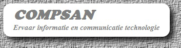
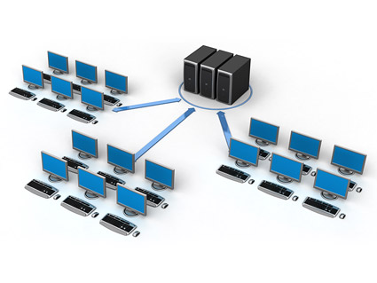

The Menu:
Compsan
Does the slowness of your computer also irritate you immensely? Then na
one phone call or an email your laptop or desktop software - and/or
hardware cleaned by me so all those excess cookies and
system files are removed and it is fast again.Tegenwoordig heeft elke pc; of het nu een laptop, desktop of Tablet systeem is antivirus software nodig.
CSAN raad de volgende antivirus software aan:
Microsoft Security Essentials voor de wat rustige surfers
AVG Antivirus voor de wat zwaardere surfers
Antivirus software moet inprincipe ook ingesteld worden op uw eigen behoeften en gebruik. Ik stel u een aantal vragen, doe een kleine analyse, en stel uw antivirus software zodanig in dat uw laptop of desktop minder gevaar loopt op een virus. Omdat uit ervaring blijkt dat de virus definities soms nooit geüpdate worden en dat er nooit een scan plaatsvindt moet deze software ingesteld zijn.
Herkent u zich in deze situatie en loopt uw computer steeds maar weer een virus op? Bel dan nu naar Keceweb Diensten of stuur me een (e-mail).

Networking
Als u meerdere computers heeft bel dan nu met Kenneth van csan, dan gaan we meteen bekijken wat de mogelijkheden zijn voor u thuis voor een gecentraliseerd netwerk zodat u op die manier ook kan genieten van een optimaal gebruikersgemak. Op maat bouw ik dan een server voor u en installeer de server software hiervoor. Verder verbind ik al die computers en/of laptops met deze centrale server waardoor u vanuit een centrale plek kan werken. Die centrale server heeft meestal de grootste harde schijf formaat van alle netwerk componenten en kan ook ingesteld worden om automatisch te backupen van alle clientcomputers.